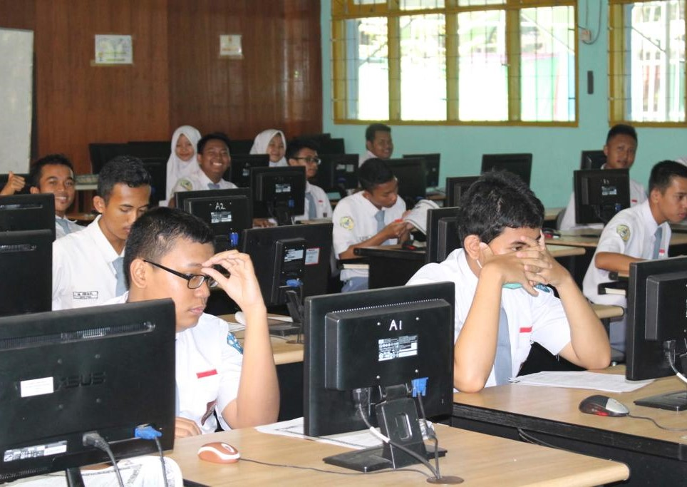
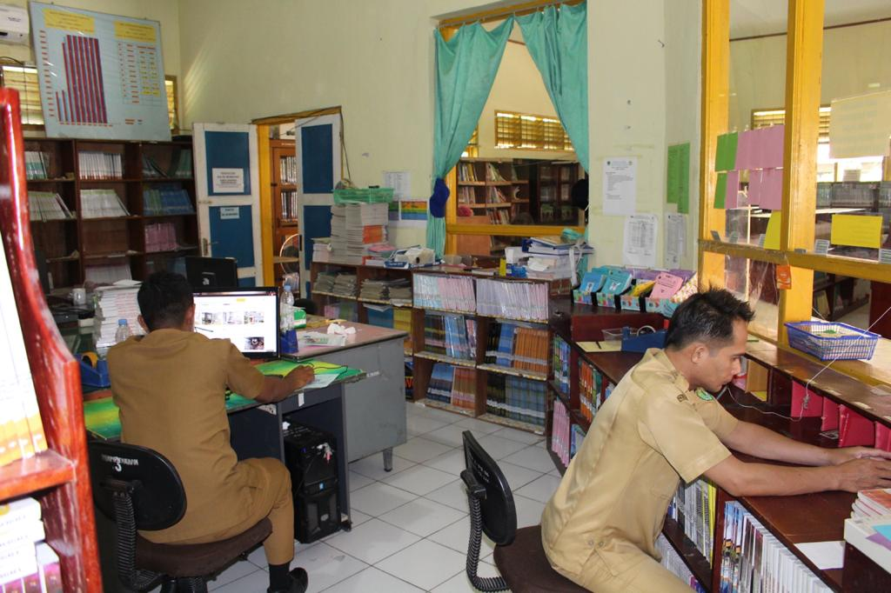
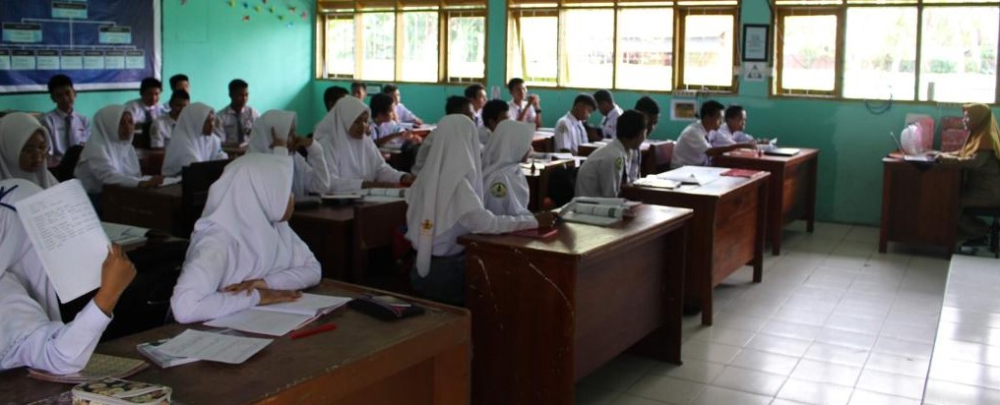

Gallery




Jika Anda tidak tahu apa-apa tentang komputer, ingatlah bahwa komputer adalah mesin yang melakukan persis seperti yang Anda perintahkan, tetapi hasilnya sering kali mengejutkan Anda. keep creative
Perkembangan TIK (Teknologi Informasi dan Komunikasi) yang begitu pesat pada saat ini telah dianggap sebagai sumber daya yang penting dalam organisasi/instansi. Semakin tingginya keinginan untuk mewujudkan pelayanan transportasi, komunikasidan informatika berbasis TIK, semakin terasa pula perlunya organisasi/instansi ini memiliki perencanaan strategis TIK, yang berguna sebagai suatu arahan strategis dan panduan kebijakan TIK untuk mendukung kegiatan operasional, serta visi dan misi organisasi. Penyusunan perencanaan strategis ini menggunakan framework Strategic Planning Information System (SPIS) John Ward dan Joe Peppard, yang diawali dengan analisis tahap masukan (input) seperti analisis lingkungan organisasi (menggunakan alat analisis CSF, analisis SWOT, analisis Value Chain, analisis kebutuhan informasi), analisis lingkungan SI/TI internal, dan analisis lingkungan SI/TI eksternal. Penyusunan strategi disusun dengan memperhatikan kesenjangan (gap) yang ada, sehingga strategi SI yang diusulkan adalah empat belas aplikasi SI berdasarkan kepada prioritas kebutuhan yang berpengaruh kepada proses bisnis dalam instansi.
Tujuan mempelajari Teknologi Informasi dan Komunikasi adalah :
1. Menyadarkan kita akan potensi perkembangan teknologi informasi dan komunikasi yang terus berubah sehingga termotivasi untuk mengevaluasi dan mempelajari teknologi ini sebagai dasar untuk belajar sepanjang hayat.
2. Memotivasi kemampuan kita agar bisa beradaptasi dan mengantisipasi perkembangan TIK, sehingga bisa melaksanakan dan menjalani aktifitas kehidupan sehari hari secara mandiri dan lebih percaya diri.
3. Mengembangkan kompetensi kita dalam menggunakan Teknologi Informasi dan Komunikasi untuk mendukung kegiatan belajar, bekerja, dan berbagai aktifitas dalam kehidupan sehari hari.
4. Mengembangkan kemampuan belajar berbasis TIK, sehingga proses pembelajaran dapat lebih optimal, menarik, dan mendorong kita lebih terampil dalam berkomunikasi, terampil mengorganisasi informasi, dan terbiasa bekerjasama.
5. Mengembangkan kemampuan belajar mandiri, berinisiatif, inovatif, kreatif, dan bertanggung jawab dalam penggunaan Teknologi Informasi dan Komunikasi untuk pembelajaran, bekerja, dan pemecahan masalah sehari hari.
Manfaat dari mempelajari Teknologi Informasi dan Komunikasi yaitu sebagai berikut :
1. Pelajaran TIK juga mempermudah orang dalam mengenal internet dan memafaatkannya untuk berkomunikasi dengan teman, keluarga, maupun saudara yang jauh, bahkan mereka bisa berkomunikasi dengan orang yang berada di berbagai belahan dunia tanpa mengalami kesulitan seperti menggunakan jejaring sosial Facebook, Twitter, YM, dll.
2. Dengan adanya palajaran TIK orang dapat dengan mudah menggunakan komputer untuk mengerjakan tugas yang berhubungan dengan pekerjaan, pengolahan angka, pengolahan kata, presentasi, dll.
3. Mengembangkan kompetensi kita dalam menggunakan Teknologi Informasi dan Komunikasi untuk mendukung kegiatan belajar, bekerja, dan berbagai aktifitas dalam kehidupan sehari hari.
4. Memotivasi kemampuan kita agar bisa beradaptasi dan mengantisipasi perkembangan TIK, sehingga bisa melaksanakan dan menjalani aktifitas kehidupan sehari hari secara mandiri dan lebih percaya diri.
5. Mengembangkan kemampuan belajar berbasis TIK, sehingga proses pembelajaran dapat lebih optimal, menarik, dan mendorong kita lebih terampil dalam berkomunikasi, terampil mengorganisasi informasi, dan terbiasa bekerjasama.
Strategi: perencanaan TIK untuk mendukung kegiatan operasional, serta visi dan misi organisasi.
Tujuan: untuk menyadarkan kita majunya teknologi informasi dan komunikasi
Manfaat: agar dapat memudahkan kita dalam mengerjakn tugas sehari-hari